Exercise Sheet
Choose PDF for printing or Word for editing.
Introduction to Statistics · Topic 2
Topic 1 described the data in front of us. Probability begins when we ask what could happen next. If we rolled a die again, selected another person, or repeated a study with a new sample, the result would not be known in advance. Probability gives us a careful language for that uncertainty.
We will build that language in small steps. First, we name the possible outcomes and group them into events. Next, we learn rules for questions containing words such as “not,” “or,” “and,” and “given.” We then attach probabilities to numerical values through probability distributions. Finally, we consider repeated samples and explain why their means differ even when every sample is drawn in the same way.
You do not need to see the entire path at once. At each stage, begin by translating the question into ordinary words, identify what is being counted or measured, and only then choose a formula.
Guiding question: When an outcome is uncertain, how can we describe what could happen and how likely each possibility is?
Probability is the language used to describe uncertainty. It prepares you to understand why repeated samples differ and how later statistical procedures use those differences.
By the end of this topic, you should be able to:
A probability is a number that belongs to an event, meaning something that may or may not happen. We write \(P(A)\) for “the probability that event \(A\) occurs.” The letter \(P\) stands for probability, and the event is written inside parentheses.
Probabilities range from 0 to 1:
The same probability can be written as a decimal or a percentage. For example, \(P(A)=0.50\) and \(P(A)=50\%\) mean the same thing. Formulas on this page use decimals.
The words “under the stated conditions” matter. A probability is meaningful only when we know what process is being considered and which outcomes are possible. We will now name those pieces carefully before learning any calculation rules.
Read the event before the number: \(P(A)=0.25\) means that event \(A\) has probability 0.25, or 25%. The number is not interpretable until \(A\) has been defined.
To calculate probabilities reliably, we first need names for the process, its individual outcomes, and the groups of outcomes that interest us.
A random experiment is a repeatable process whose result is not known in advance, such as rolling a die or selecting one person at random. One possible result is called an elementary outcome. We use the Greek letter \(\omega\) (lowercase omega) for one elementary outcome. The collection of every possible outcome is the sample space, written \(\Omega\) (uppercase omega). An event is a selected group of outcomes from that sample space.
Suppose a random device can return one of the integers 1 through 10. Its sample space is \(\Omega = \{1, 2, 3, 4, 5, 6, 7, 8, 9, 10\}\). Curly braces list the outcomes that belong to a set. Let \(A = \{1, 2, 3\}\), \(B = \{4, 5, 6, 7\}\), and \(D = \{2, 3, 7\}\). Each letter names a different event. We can now form four important event operations:
A subset is a set whose every outcome also belongs to a larger set. We write \(C\subseteq D\) when every outcome in \(C\) also belongs to \(D\). For example, every outcome in \(A\cap D=\{2,3\}\) belongs to \(D\).
| Notation | Read as | Meaning for the ten-outcome device |
|---|---|---|
| \(\omega\) | one outcome | One realized number, such as 7 |
| \(\Omega\) | sample space | Every possible number from 1 through 10 |
| \(A \cup D\) | \(A\) union \(D\) | Outcomes belonging to at least one event |
| \(A \cap D\) | \(A\) intersection \(D\) | Outcomes belonging to both events |
| \(A'\) | complement of \(A\) | Outcomes in \(\Omega\) that are not in \(A\) |
| \(A \cap D \subseteq D\) | \(A\) intersection \(D\) is a subset of \(D\) | Every shared outcome also belongs to \(D\) |
Use the table as a translation guide. The first two rows name the building blocks: one outcome and the full sample space. The next three rows combine or exclude outcomes. The final row describes containment rather than a new event operation. When a formula later feels abstract, return to the ten numbered outcomes and ask which numbers the notation selects.
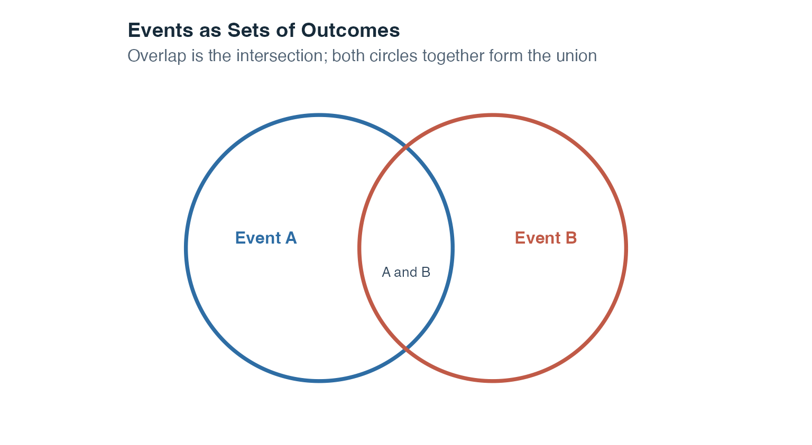
This kind of picture is called a Venn diagram. Each circle represents an event, and the overlap represents outcomes that belong to both events. Here, the circle sizes serve only as visual guides and should not be read as numerical probabilities.
The next figure applies every operation to the same ten-outcome sample space. The small letters beneath a number show its original event membership. A tile marked “A, D,” for example, belongs to both \(A\) and \(D\).
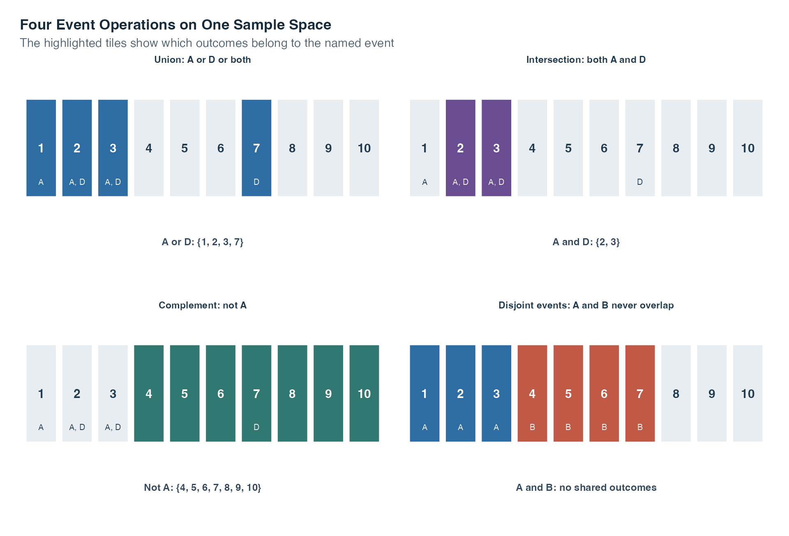
Read the panels in this order:
These set operations tell us which outcomes an event contains. The next step is to calculate the probability attached to those outcomes.
The complement rule states:
\[P(A') = 1 - P(A)\]
If 68% of students pass a module, then 32% do not pass. The complement rule is particularly useful when computing the probability of an event directly is difficult but computing its opposite is straightforward.
The complement handles “not.” We now turn to questions containing “or,” which require the addition rule.
When we want the probability that at least one of two events occurs, we use the addition rule. Two events are mutually exclusive (disjoint) if they cannot both occur at the same time, so their intersection is the empty set. For mutually exclusive events:
\[P(A \cup B) = P(A) + P(B)\]
Because there is no overlap, no correction is needed. When events are not mutually exclusive, adding their probabilities without a correction counts the overlap twice. The general addition rule corrects for this:
\[P(A \cup B) = P(A) + P(B) - P(A \cap B)\]
Subtracting \(P(A \cap B)\) removes the double-counting of outcomes belonging to both events.
In both formulas, \(A\cup B\) is the event “\(A\) or \(B\) or both,” while \(A\cap B\) is the overlap “\(A\) and \(B\).” The general formula is the safe starting point. The shorter formula is available only after we have established that the overlap has probability 0.
The addition rule extends to more than two disjoint events in a straightforward way. If \(A_1, A_2, \ldots, A_k\) are all mutually exclusive, their union has probability:
\[P(A_1 \cup A_2 \cup \cdots \cup A_k) = P(A_1) + P(A_2) + \cdots + P(A_k)\]
This applies only when all pairs of events are disjoint. If any two events share outcomes, the general addition rule must be used.
Mutual exclusivity and independence answer different questions. If two events with nonzero probability are mutually exclusive, knowing that one occurred tells you with certainty that the other did not, which makes the events dependent. Mutual exclusivity asks whether events can occur together. Independence asks whether the occurrence of one changes the probability of the other.
The addition rule answers an “or” question. An “and” question requires multiplication, and a “given that” question requires conditional probability. Those two ideas are developed next.
Conditional probability is the probability of one event occurring after we restrict attention to cases where another event has occurred. The vertical bar in \(P(A\mid B)\) is read as “given.” Thus, \(P(A\mid B)\) means “the probability of \(A\), given that \(B\) has occurred.”
\[P(A \mid B) = \frac{P(A \cap B)}{P(B)}\]
Where:
The denominator \(P(B)\) is crucial because \(B\) becomes the new reference group. Within that smaller group, the numerator \(P(A\cap B)\) identifies the cases that also belong to \(A\). The condition \(P(B)>0\) means that the reference group cannot be empty.
The complement rule also works inside a condition, but the condition must stay the same:
\[P(A'\mid B)=1-P(A\mid B).\]
If 60% of the cases in group \(B\) belong to \(A\), then the remaining 40% of that same group belong to \(A'\). Changing \(B\) would change the reference group and answer a different question.
Rearranging the definition gives the multiplication rule (general form):
\[P(A \cap B) = P(A \mid B) \cdot P(B)\]
For three successive events, apply the same reasoning one stage at a time:
\[P(A \cap B \cap C) = P(A)P(B \mid A)P(C \mid A \cap B).\]
Suppose the probability of locating an eligible archive record is 0.72. Among the records that are located, the probability of obtaining a usable scan is 0.80. Among the records that are both located and usable, the probability of verifying the metadata is 0.85. The probability of completing the full chain is \(0.72 \times 0.80 \times 0.85 = 0.4896\). Each probability is interpreted within the group that reached the preceding stage.
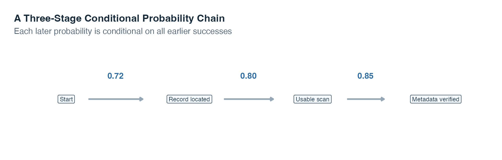
Read the arrows from left to right. Multiplying all three values follows one complete path. Replacing the final success probability by \(1-0.85\) would describe success at the first two stages followed by failure at the third.
When two events are independent, knowing that one has occurred provides no information about whether the other will occur. The general definition is:
\[P(A \cap B) = P(A) \cdot P(B)\]
When the relevant conditions have positive probability, independence also means \(P(B\mid A)=P(B)\). In words, restricting attention to the cases in \(A\) does not change the probability of \(B\).
The table below records tutorial format and whether a practice set was submitted. It lets us compare three kinds of probability. A marginal probability uses a row or column total and describes one event without an added condition. A joint probability describes two events occurring together. A conditional probability restricts the denominator to one row or column group.
| Tutorial format | Submitted | Not submitted | Total |
|---|---|---|---|
| Live | 30 | 20 | 50 |
| Recorded | 20 | 30 | 50 |
| Total | 50 | 50 | 100 |
Start with the question, then choose the denominator. The marginal probability of submission is \(50/100=0.50\) because all 100 students form the reference group. The joint probability of live tutorial and submission is \(30/100=0.30\), again using all 100 students. The conditional probability of submission given a live tutorial is \(30/50=0.60\) because only the 50 live-tutorial students now form the reference group. For recorded tutorials it is \(20/50=0.40\). Because the conditional probabilities differ, tutorial format and submission are not independent in this table. They are also not disjoint because 30 students belong to both the live and submitted events.
The symbols \(A\subseteq B\) mean that every outcome in \(A\) also belongs to \(B\). In that case, \(P(A)\leq P(B)\): a smaller event cannot be more probable than the event that contains it. For example, “a record has both a missing creator and a missing date” is contained within “a record has a missing creator.” Adding a requirement can only keep the probability the same or make it smaller.
| Words in the question | Event notation | Main rule to consider |
|---|---|---|
| not \(A\) | \(A'\) | Complement |
| \(A\) or \(B\) or both | \(A\cup B\) | Addition |
| \(A\) and \(B\) | \(A\cap B\) | Multiplication |
| \(A\), given \(B\) | \(P(A\mid B)\) | Conditional probability |
These rules move from known probabilities to a new probability in the same direction as the question. Sometimes, however, we know \(P(B\mid A)\) and need the reverse probability \(P(A\mid B)\). Bayes’ theorem handles that reversal.
Bayes’ theorem connects two conditional probabilities that point in opposite directions. It is useful when we know \(P(B\mid A)\) but the question asks for \(P(A\mid B)\).
\[P(A \mid B) = \frac{P(B \mid A) \cdot P(A)}{P(B \mid A) \cdot P(A) + P(B \mid A') \cdot P(A')}\]
Read the formula one piece at a time:
The denominator includes every way that \(B\) can occur. It adds the path through \(A\) and the path through \(A'\). This addition is called the law of total probability. The numerator keeps only the path where both \(A\) and \(B\) occur.
A standard application in psychology and medicine uses the terminology of diagnostic testing. Let \(A\) = “disorder is present” and \(B\) = “test is positive.”
Suppose prevalence is 3%, sensitivity is 90%, and specificity is 85%. The probability of the “disorder present and positive” path is \(0.03\times0.90=0.027\). The probability of the “disorder absent and positive” path is \(0.97\times0.15=0.1455\). Therefore,
\[P(A\mid B)=\frac{0.027}{0.027+0.1455}\approx0.157.\]
Among people with a positive result, about 15.7% are expected to have the disorder under these assumptions. The answer is much lower than the 90% sensitivity because the disorder is rare and the much larger disorder-absent group also produces some positive results.
The same calculation becomes concrete with 10 000 hypothetical people. The counts below are expected frequencies under the stated rates, not observed clinical data.
| Condition status | Positive result | Negative result | Total |
|---|---|---|---|
| Present | 270 | 30 | 300 |
| Absent | 1 455 | 8 245 | 9 700 |
| Total | 1 725 | 8 275 | 10 000 |
The table expresses the same calculation as counts. Out of 10 000 hypothetical people, 300 are expected to have the disorder and \(0.90\times300=270\) of them are expected to test positive. Of the 9 700 people without the disorder, \(0.15\times9700=1455\) are expected to test positive. There are therefore \(270+1455=1725\) positive results in total, and \(P(A\mid B)=270/1725\approx0.1565\).
The table gives all four counts, but Bayes’ theorem becomes easier to remember when we also follow how those counts were produced. The next diagram turns the denominator into a visible set of paths.
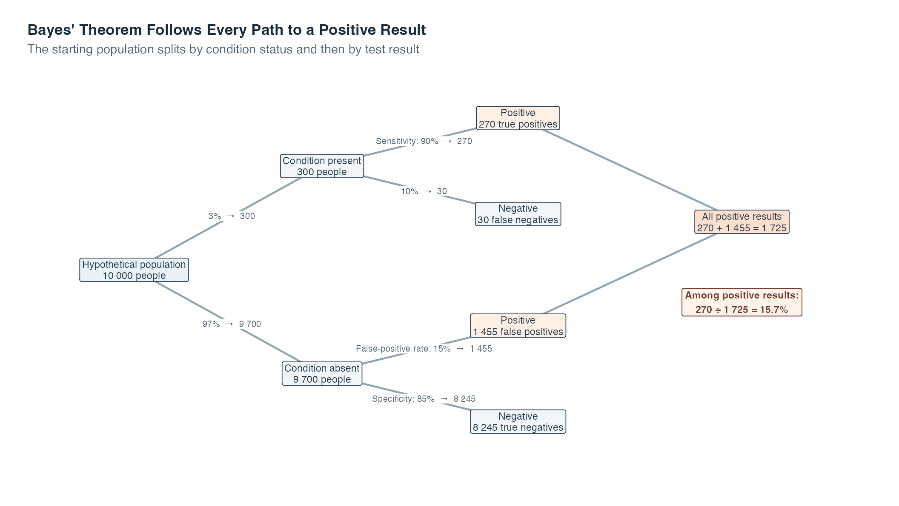
Begin at the leftmost box. The first pair of arrows uses prevalence to divide the 10 000 people into 300 with the condition and 9 700 without it. The next arrows apply sensitivity within the condition-present group and specificity within the condition-absent group. Each percentage is therefore read inside the group that reached that branch, not as a percentage of all 10 000 people.
Now follow only the two orange positive-result boxes. They contain 270 true positives and 1 455 false positives. Both routes must enter the denominator because both produce the observed information, a positive result. The numerator keeps the 270 people who reached a positive result through the condition-present route. Thus the final comparison is \(270/(270+1455)=270/1725\approx0.157\).
The boxes show why a high sensitivity does not guarantee a high probability of having the condition after a positive result. They do not describe an actual screening program or prove that these rates apply to any real population. Changing the prevalence, sensitivity, or specificity would change the branch counts and the final probability.
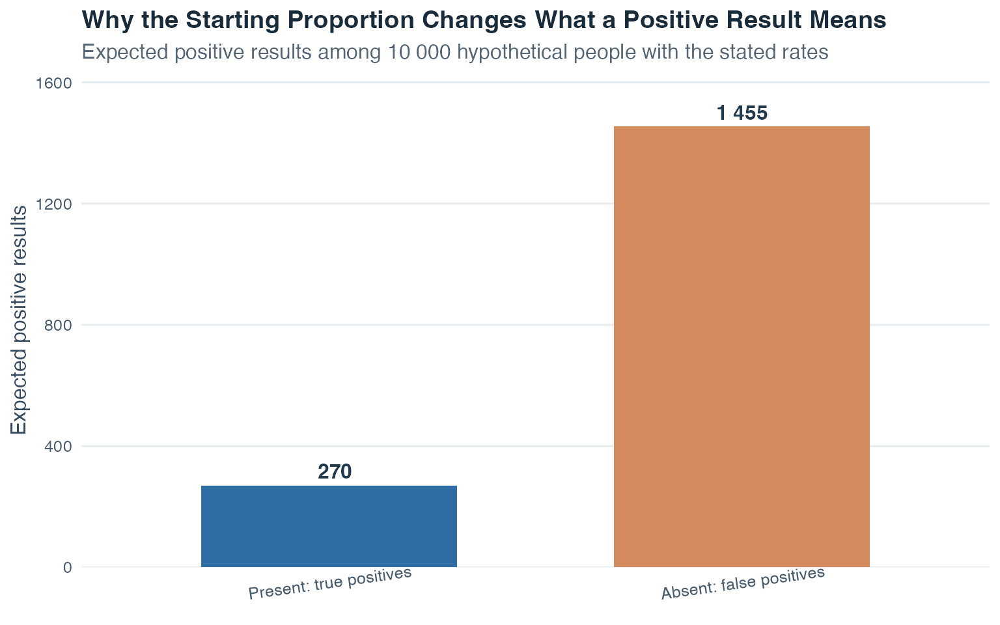
The false-positive bar is taller not because sensitivity is low, but because the disorder-absent group is much larger. The two bars together form the denominator of Bayes’ theorem: every positive result, regardless of which path produced it.
The base rate matters: Here, the prevalence is the starting or base-rate probability. Sensitivity alone cannot answer “How likely is the disorder after a positive result?” Prevalence, sensitivity, and specificity must all be used.
Up to this point, events have been collections such as “positive result” or “high anxiety.” We now move from event labels to numerical outcomes. That requires the idea of a random variable.
In probability theory, a random variable assigns a number to each possible outcome of a random experiment. For a coin toss, we might code heads as 1 and tails as 0. For a die roll, the number on the upward face can be the random variable’s value. We use the capital letter \(X\) for the random variable and a lowercase \(x\) for one possible numerical value it can take.
Discrete random variables can take only separate, countable values. The number of successes in several trials is discrete: it can be 0, 1, 2, 3, and so on, but not 2.7. Each possible value can have its own positive probability, and all of those probabilities add to 1.
Continuous random variables can, in principle, take any value within a range, including values between two displayed numbers. Their probabilities are assigned to intervals rather than to single exact points. We will return to this distinction after studying discrete variables.
Every random variable has a probability distribution. A distribution is an idealized description of which values are possible and how probability is allocated across them. For a discrete variable, we list probabilities for separate values. For a continuous variable, we use a density curve and calculate areas.
We begin with the discrete case because its probabilities can be displayed value by value.
For a discrete random variable \(X\), three quantities are especially important.
The expected value (or mean) of \(X\), written \(E(X)\), is the probability-weighted average of all possible values:
\[E(X) = \sum_{x} x \cdot P(X = x)\]
Read the formula as follows:
The expected value describes the long-run average outcome across many repetitions of the experiment. It does not need to be a value \(X\) can actually take: if a fair die is rolled, \(E(X) = 3.5\), even though the die never lands on 3.5.
The variance of \(X\) measures how spread out the distribution is around its expected value:
\[\text{Var}(X) = \sum_{x} (x - E(X))^2 \cdot P(X = x)\]
For each possible value, \(x-E(X)\) is its distance from the expected value. Squaring this distance makes negative and positive distances contribute positively. Multiplying by \(P(X=x)\) gives more weight to values that occur more often, and \(\sum_x\) adds the weighted squared distances. The standard deviation is \(\text{SD}(X)=\sqrt{\text{Var}(X)}\), which returns the spread to the original units of \(X\).
A probability mass function (PMF) assigns a probability to each separate value of a discrete random variable. A cumulative distribution function (CDF) instead adds the probabilities up to a chosen value. The word cumulative means “built up as we move from smaller to larger values.” The CDF is written
\[F(x) = P(X \leq x)\]
Here, \(F(x)\) is the cumulative probability at \(x\), and the symbol \(\leq\) means “less than or equal to.” A CDF cannot decrease because moving to a larger \(x\) keeps all earlier probability and may add more.
Consider a newly authored example in which \(X\) is the number of follow-up requests attached to a randomly selected archive case.
| \(x\) | 0 | 1 | 2 | 4 |
|---|---|---|---|---|
| \(P(X=x)\) | 0.10 | 0.35 | 0.40 | 0.15 |
| \(F(x)=P(X\leq x)\) | 0.10 | 0.45 | 0.85 | 1.00 |
The PMF row contains nonnegative probabilities that sum to 1. The CDF row is built from left to right: for example, \(F(2)=0.10+0.35+0.40=0.85\). The expected value is
\[E(X)=0(0.10)+1(0.35)+2(0.40)+4(0.15)=1.75.\]
For a shorter variance calculation, first compute the expected squared value:
\[E(X^2)=0^2(0.10)+1^2(0.35)+2^2(0.40)+4^2(0.15)=4.35.\]
Then use \(\operatorname{Var}(X)=E(X^2)-[E(X)]^2\), which gives \(4.35-1.75^2=1.2875\). This shortcut is algebraically equivalent to the variance formula above.
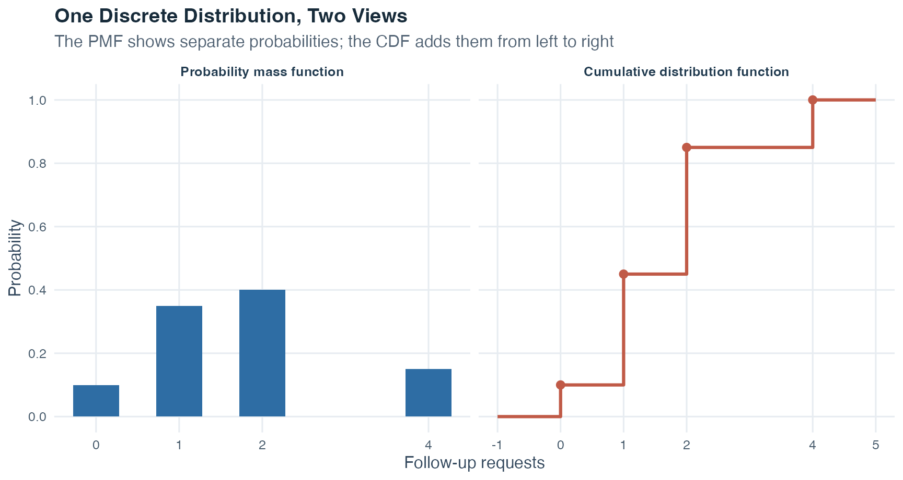
Compare the height at \(x=2\) across panels. The PMF height 0.40 is the probability of exactly two requests, while the CDF height 0.85 is the probability of at most two requests. A CDF can never decrease because it retains all probability accumulated earlier.
The next distribution is a special discrete model for repeated trials with only two possible outcomes per trial.
The binomial distribution models a count of successes across repeated trials. A trial is one repetition of the process, such as one coin toss or one question answered. Here, “success” simply names the outcome we decide to count and need not describe something desirable.
The notation \(X\sim B(n,\pi)\) is read as “\(X\) follows a binomial distribution with parameters \(n\) and \(\pi\).” Here:
The probability of obtaining exactly \(x\) successes in \(n\) trials is:
\[P(X = x) = \binom{n}{x} \pi^x (1-\pi)^{n-x}\]
The formula combines three pieces:
The coefficient is \(\binom{n}{x}=\dfrac{n!}{x!(n-x)!}\). The exclamation mark denotes a factorial: \(n!=n\cdot(n-1)\cdots2\cdot1\), and \(0!=1\). You do not need to list every possible ordering by hand because the coefficient counts them for you.
Let \(X\sim B(4,0.25)\). For exactly two successes,
\[P(X=2)=\binom{4}{2}(0.25)^2(0.75)^2=6(0.0625)(0.5625)\approx0.211.\]
The symbol \(\approx\) shows that the displayed result has been rounded. For “at least one success,” the complement is shorter than adding four separate probabilities:
\[P(X\geq1)=1-P(X=0)=1-(0.75)^4\approx0.684.\]
The event “no successes” is the complement of “at least one success.”
The expected value and variance of a binomial random variable are:
\[E(X) = n\pi \qquad \text{Var}(X) = n\pi(1-\pi)\]
A single trial has two categories, success and failure. The binomial random variable is the count across all trials, so it can take the values \(0,1,\ldots,n\). For example, across two coin tosses, the count of heads can be 0, 1, or 2.
Check four conditions before using the binomial model: (1) the number of trials \(n\) is fixed in advance; (2) every trial is classified into exactly two outcomes, success or failure; (3) the success probability \(\pi\) stays the same from trial to trial; and (4) trials are independent, meaning that one trial’s result does not change another trial’s success probability.
One common warning concerns selection from a small, limited population. Sampling without replacement means that, once a unit has been selected, it cannot be selected again. Each selection then changes who remains available. The success probability can change, and the selections are no longer independent. A binomial model should not be used unless those changes are negligible for the situation being modeled.
| Question wording | Probability statement | Efficient calculation |
|---|---|---|
| Exactly \(k\) | \(P(X=k)\) | One binomial mass |
| At most \(k\) | \(P(X\leq k)\) | Cumulative sum from 0 through \(k\) |
| Fewer than \(k\) | \(P(X<k)\) | \(P(X\leq k-1)\) |
| At least \(k\) | \(P(X\geq k)\) | \(1-P(X\leq k-1)\) |
| More than \(k\) | \(P(X>k)\) | \(1-P(X\leq k)\) |
Read the five rows by checking both the side of the boundary and whether the boundary is included. Exactly \(k\) selects only the single count \(k\). At most \(k\) is the lower side including \(k\), so the cumulative sum runs from 0 through \(k\). Fewer than \(k\) is the lower side excluding \(k\), so it stops at \(k-1\). At least \(k\) is the upper side including \(k\); its complement contains only values below \(k\), from 0 through \(k-1\). More than \(k\) is the upper side excluding \(k\); its complement includes all values through \(k\). These wording differences determine whether the boundary count belongs in the probability.
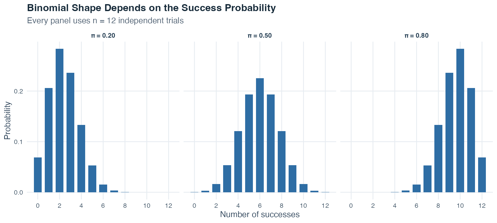
All three panels use \(n=12\), so every horizontal axis runs from 0 through 12 successes. When \(\pi=0.20\), small counts are most likely and the bars trail toward larger counts. When \(\pi=0.50\), the distribution is symmetric around 6. When \(\pi=0.80\), large counts are most likely. The expected count \(n\pi\) moves from 2.4 to 6 to 9.6 as the success probability increases.
The binomial distribution describes separate counts. We now move to continuous values, where probability is represented by area rather than by individual bars.
Continuous random variables can take any value within a range. Because there are infinitely many possible values, we do not assign positive probability to one exact point. Instead, a density function \(f(x)\) draws a curve, and probability is represented by area under that curve over an interval.
| Distribution object | Discrete variable | Continuous variable |
|---|---|---|
| Basic function | PMF \(p(x)=P(X=x)\) | Density \(f(x)\) |
| Probability at one exact value | May be positive | \(P(X=x)=0\) |
| Interval probability | Sum of included masses | Area \(\int_a^b f(x)\,dx\) |
| Total probability | \(\sum_x p(x)=1\) | \(\int_{-\infty}^{\infty} f(x)\,dx=1\) |
| CDF | \(F(x)=\sum_{t\leq x}p(t)\) | \(F(x)=\int_{-\infty}^{x}f(t)\,dt\) |
Read the two columns side by side. In the discrete column, probability sits on separate possible values and can be added. In the continuous column, probability is spread across an interval and must be read as area. Both columns still obey the same two requirements: total probability is 1, and the CDF records how much probability has accumulated at or below a chosen boundary.
The integral sign \(\int\) means “accumulate area.” In \(\int_a^b f(x)\,dx\), the values \(a\) and \(b\) are the lower and upper interval boundaries, \(f(x)\) gives the curve’s height, and \(dx\) indicates that the area is accumulated across values of \(x\). The expression \(\int_{-\infty}^{\infty}f(x)\,dx=1\) says that the total area under a density curve is 1. Here, \(-\infty\) and \(\infty\) mean that the entire possible range is included.
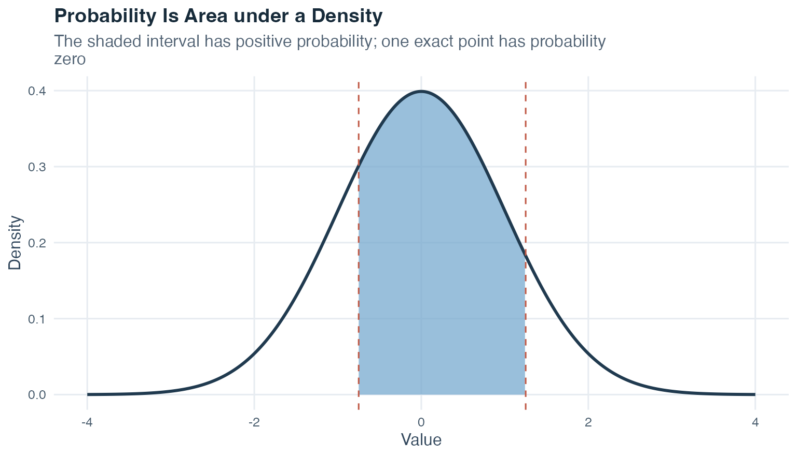
The curve’s height shows where values are more densely concentrated, but height alone is not probability. The shaded area is the probability. Changing an interval boundary changes the area. Including or excluding one exact endpoint does not change a continuous probability because a single point has probability 0.
For a continuous distribution, the symbol \(\mu\) (mu) denotes the expected value and \(\sigma^2\) (sigma squared) denotes the variance. The CDF \(F(x)=P(X\leq x)\) gives the area to the left of \(x\). A quantile reverses that question: it starts with a cumulative proportion, such as 0.99, and asks for the boundary with that proportion of area to its left.
The expected value and variance use the same ideas as for a discrete variable, but a continuous density requires areas instead of separate probability masses:
\[E(X)=\int_{-\infty}^{\infty}x f(x)\,dx\]
\[\operatorname{Var}(X)=\int_{-\infty}^{\infty}[x-E(X)]^2 f(x)\,dx.\]
In the first formula, every possible value \(x\) is weighted by the density around that value. In the second, every squared distance from the expected value is weighted in the same way. The integrals combine those weighted contributions across the full range of the variable.
The normal distribution is the main continuous probability model used here. It is symmetric, has one peak, and has the familiar bell shape. The notation \(X\sim N(\mu,\sigma^2)\) means that \(X\) follows a normal distribution with expected value \(\mu\) and variance \(\sigma^2\).
Its density function is
\[f(x) = \frac{1}{\sigma\sqrt{2\pi}} \exp\!\left(-\frac{(x - \mu)^2}{2\sigma^2}\right).\]
You are not expected to calculate this density by hand here, but each symbol has a role. The value \(x\) is the point on the horizontal scale, \(\mu\) sets the center, and \(\sigma\) sets the spread. The squared distance \((x-\mu)^2\) makes the curve fall as values move away from the center. The expression \(\exp(\cdot)\) is an exponential function that creates the smooth bell shape. In this formula, \(\pi\) is the mathematical constant approximately equal to 3.1416. The same Greek letter represented the binomial success probability earlier, so the context determines its meaning.
A normal distribution is a model: It is an idealized description, not a claim that every real dataset is perfectly bell-shaped. Before using it, ask whether a symmetric, single-peaked curve is a reasonable description of the quantity being modeled.
Normal distributions can have different centers and spreads. The z-transformation places them on one common reference scale:
\[z = \frac{x - \mu}{\sigma}.\]
Here, \(x\) is the original value, \(\mu\) is the population mean, and \(\sigma\) is the population standard deviation. First subtracting \(\mu\) measures the value’s distance from the mean. Dividing by \(\sigma\) expresses that distance in standard-deviation units. The resulting number \(z\) is called a z-score.
Topic 1 standardized values inside an observed sample with \(z=(x-\bar{x})/s\). Here we standardize a population probability model with \(z=(x-\mu)/\sigma\). The purpose is the same in both cases: express a value as a distance from its mean in standard-deviation units. Standardization changes the center and units, but it does not change the basic shape of the distribution.
A z-score of 0 is exactly at the mean. A positive z-score is above the mean, and a negative z-score is below it. For example, under the illustrative model with \(\mu=100\) and \(\sigma=15\), a value of 130 has
\[z=\frac{130-100}{15}=2,\]
so it lies two standard deviations above the mean.
After the z-transformation, a normally distributed variable follows the standard normal distribution, written \(Z\sim N(0,1)\). The capital \(Z\) names the standardized random variable, 0 is its mean, and 1 is its variance and therefore also its standard deviation. A standard-normal table gives the area to the left of selected z-scores. This one reference table can be used for any normal distribution after standardization.
Now that values on any normal scale can be converted to z-scores, we can solve four recurring types of normal-probability questions.
Before calculating anything, identify whether the question gives a boundary and asks for area, or gives an area and asks for a boundary. The four combinations below cover the recurring question types. We use the illustrative model \(X\sim N(100,15^2)\), meaning \(\mu=100\), \(\sigma=15\), and \(\sigma^2=225\).
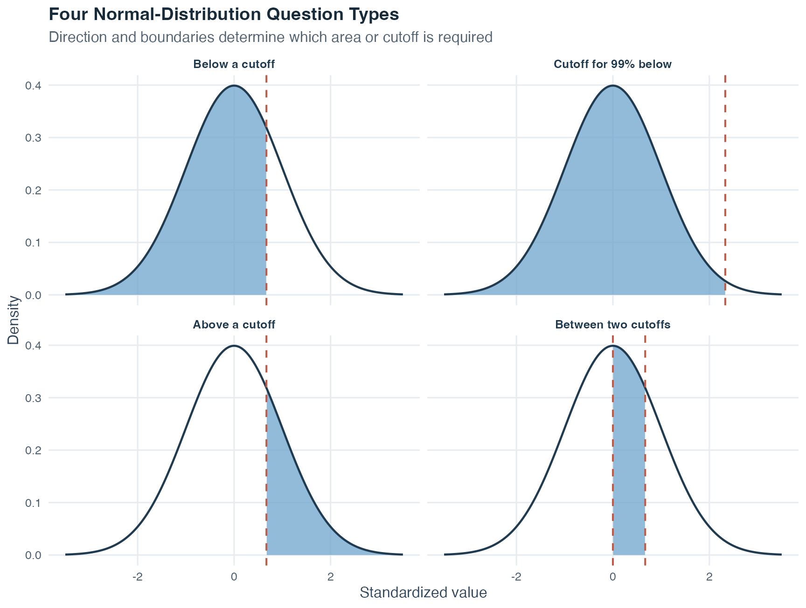
The figure follows the same order as the four explanations. In the first and third panels, one known boundary divides the curve. In the fourth panel, two boundaries enclose the requested area. The second panel reverses the usual direction: the area 0.99 is known, and the boundary is the unknown quantity. Pointing to the requested region before calculating helps prevent left-tail and right-tail errors.
So far, the normal model has described values within a population. Statistical research usually observes only a sample from that population. The next section asks what happens when the act of sampling itself is repeated.
The population is the complete group of units that the research question concerns. A unit may be a person, record, school, or another object being studied. A sample is the smaller group that is actually observed. We use a sample because measuring every population unit is often impractical.
A simple random sample of a fixed size gives every possible sample of that size the same probability of being selected. As a result, every population unit has the same chance of being included. This random selection rule matters because it connects what we observe in the sample to the population we want to describe.
A numerical feature of a population is called a parameter. A parameter is fixed for that population but is usually unknown. A numerical feature calculated from the observed sample is called a statistic. A statistic can describe the sample and can also serve as an estimator, meaning a sample-based quantity used to estimate an unknown population parameter.
| Quantity | Population parameter | Sample statistic used to estimate it |
|---|---|---|
| Mean | \(\mu\) | \(\bar{x}\) |
| Variance | \(\sigma^2\) | \(s^2\) |
The Greek symbols \(\mu\) and \(\sigma^2\) refer to the population. The symbols \(\bar{x}\) and \(s^2\) refer to one observed sample. Keeping these symbols distinct helps us remember which quantities are known from data and which remain population targets.
Now imagine repeating the same random-sampling procedure many times. Each time, draw a new sample of size \(n\) and calculate its mean. The means will differ because the samples contain different units. The probability distribution of all those possible means is the sampling distribution of the mean. It is a theoretical description of how the sample mean varies across repeated random samples.
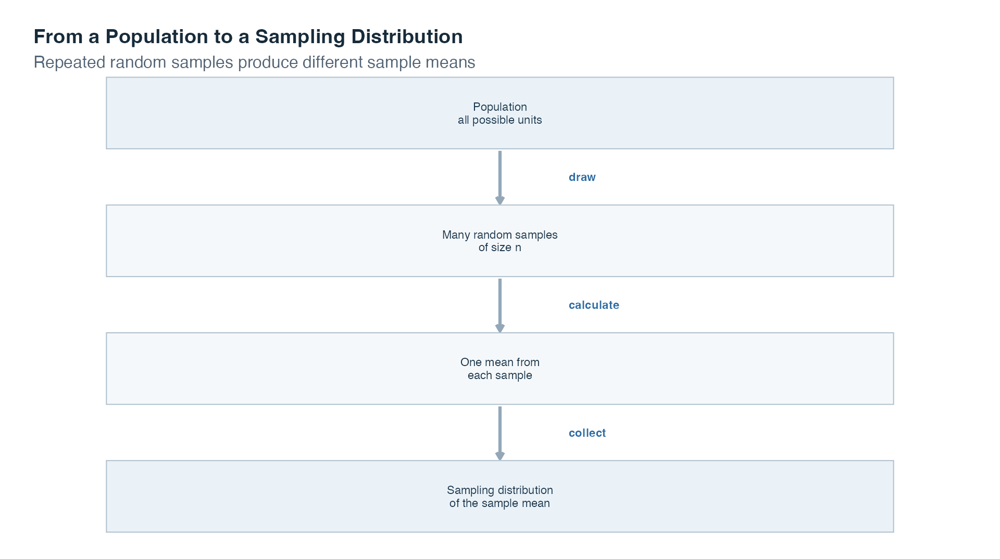
Read the figure from top to bottom. The population is the source. Repeated random samples are drawn using the same sample size and selection rule. One mean is calculated from each sample. Collecting those possible means produces the sampling distribution.
Three related distributions must remain separate:
| Distribution | What its values represent | One example |
|---|---|---|
| Population distribution | The variable’s values across all population units | Every person’s score in the population |
| Sample distribution | The observed values in one selected sample | The scores of the people selected once |
| Sampling distribution | One statistic from each possible repeated sample | The mean score from each repeated sample |
The word sampling in “sampling distribution” refers to repeated samples, not to the observations inside one sample. Other statistics, such as a median or variance, can also have sampling distributions. This topic focuses on the sample mean.
Two key properties of the sampling distribution of the mean:
\[E(\bar{X}) = \mu, \qquad \operatorname{Var}(\bar{X})=\frac{\sigma^2}{n}, \qquad \text{SD}(\bar{X}) = \frac{\sigma}{\sqrt{n}}.\]
The capital expression \(\bar{X}\) represents the sample mean before a particular sample has been drawn, so it can vary from sample to sample. The observed value from one actual sample is written \(\bar{x}\). The first formula says that the sampling distribution is centered at the population mean \(\mu\). The second gives its variance, and the third gives its standard deviation. That standard deviation is called the standard error of the mean.
A random-sampling formula is useful only if the selection process can reach the population of interest. The target population is the full group named by the research question. The sampling frame is the list or practical procedure used to reach potential participants. The achieved sample is the group that ultimately provides usable data. These three groups may differ.
If some members of the target population cannot appear in the sampling frame, the frame has undercoverage. If the people who respond differ systematically from those who do not respond, nonresponse bias can occur. Here, bias means a systematic tendency for an estimate to miss its population target in one direction. A very large sample can still be biased when it repeatedly draws from the wrong frame or depends on selective response.
The following teaching simulation makes the difference visible. It creates a target population of 10 000 interest scores. A random sample gives every population unit the same selection chance. A voluntary-response sample instead makes units with higher interest more likely to respond. Both samples contain 4373 units, so the comparison changes the selection method rather than the sample size.
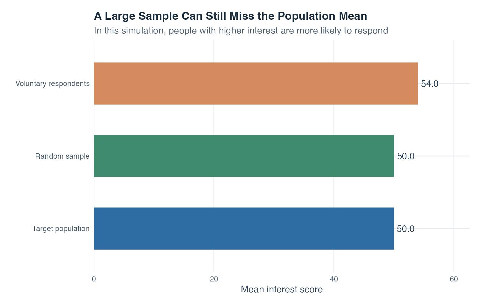
The target-population mean is 50. The equally sized random sample has mean 50, while the voluntary respondents have mean 54. The random-sample difference is ordinary chance variation. The respondent mean is systematically higher because high-interest units respond more often. Adding more respondents through the same selective process would make that mean more stable, but it would not make it representative of the target population.
This separates two questions. Precision asks how much an estimate would vary across repeated samples. Representativeness asks whether the selection process allows the estimate to describe the intended population. We now study precision through the standard error.
The standard error of the mean describes how much sample means vary across repeated random samples of the same size. A smaller standard error means that the possible sample means are more tightly concentrated around the population mean.
\[\text{SE} = \frac{\sigma}{\sqrt{n}}\]
Where:
In the formula, \(\sigma\) is the population standard deviation, \(n\) is the number of observations in each sample, and \(\sqrt{n}\) is the square root of the sample size. Usually, \(\sigma\) is unknown. We then insert the sample standard deviation \(s\) in its place:
\[\widehat{\text{SE}}=\frac{s}{\sqrt{n}}.\]
The hat over \(\widehat{\text{SE}}\) marks an estimate. This substitution is called a plug-in estimate because the known sample value \(s\) is plugged into the formula where the unknown population value \(\sigma\) would otherwise appear.
Two consequences follow directly from the formula:
The shape of the sampling distribution depends first on the population. If the population itself is normally distributed, then the sampling distribution of \(\bar{X}\) is normal for every positive sample size \(n\):
\[\bar{X}\sim N\!\left(\mu,\frac{\sigma^2}{n}\right).\]
If the population is not normal, the central limit theorem explains what happens as \(n\) grows. The version used here assumes observations are independent, meaning one observation does not determine another, and identically distributed, meaning every observation comes from the same population distribution. It also assumes that the population has a defined, finite variance, so its spread can be represented by a finite value \(\sigma^2\). Under these conditions, the sampling distribution of the mean becomes increasingly well approximated by a normal distribution:
\[\bar{X} \approx N\!\left(\mu,\, \frac{\sigma^2}{n}\right)\]
The symbol \(\approx\) means “is approximately distributed as.” There is no single sample size at which the approximation suddenly becomes correct. The supplied course material sometimes uses \(n>30\) as a rough classroom heuristic, not as a model condition or guarantee. The examples show why adequacy depends on the original population shape: a strongly skewed population generally needs a larger \(n\) than a shape already close to normal.
What becomes approximately normal? The theorem concerns the distribution of sample means across repeated samples. It does not say that the individual observations in the population become normal.
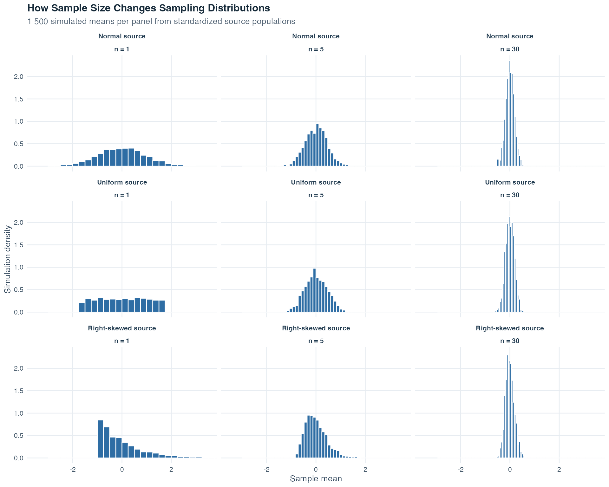
Each row starts from a different population shape. Read from left to right as sample size increases from 1 to 5 to 30. Every panel uses the same horizontal and vertical scales, so widths and density heights can be compared directly. At \(n=1\), every “mean” contains only one observation, so the sampling distribution has the same shape as the population. As \(n\) grows, the sample means become less spread out. Because the total area of every density remains 1, that narrowing also makes the central bars taller. The normal-population row remains normal throughout. The uniform and right-skewed rows become progressively more bell-shaped, illustrating a gradual approximation rather than an abrupt cutoff.
Topic 1 taught us to describe one observed dataset. This topic added a second layer: a model for what could vary if an event or a sampling process were repeated. Event rules organize uncertainty, probability distributions describe random numerical outcomes, and sampling distributions describe how a statistic such as the sample mean changes from sample to sample.
That last connection opens the door to Hypothesis Testing and Confidence Intervals. As in Topic 1, a sample mean describes one sample. Its sampling distribution tells us how much that mean would ordinarily vary under repeated random sampling, and the standard error summarizes that variation. Topic 3 uses this foundation to judge whether an observed result is surprising under a stated hypothesis and to express the uncertainty around an estimated population value.
The logic is cumulative: describe the observed data first, state the probability model second, and reason from the sample toward the population only when the sampling process and model assumptions justify that step. Probability does not make uncertainty disappear. It makes the uncertainty visible and measurable.
A researcher wants to study exam anxiety among first-year psychology students and compare students in two self-reported stress groups. A cohort is a group studied together. The data on this page are entirely computer-created. No real person was measured.
As Topic 1’s simulated study explained, a simulation follows a stated computer recipe, and a fixed seed lets everyone rebuild the same artificial data. This page reuses that setup, so its 160 cases, tables, figures, and calculations remain consistent whenever the page is rebuilt.
There are two kinds of number to keep separate from the beginning. The recipe contains probabilities and distribution settings chosen before the cases are created. The completed artificial cohort contains the counts and relative frequencies actually produced. Those generated values will usually be close to the recipe values, but they need not match exactly because this cohort contains only 160 chance-like outcomes rather than every outcome the recipe could produce.
Begin by imagining that one row is selected at random from this fixed artificial cohort. How likely is a high-anxiety outcome, and how does that probability change once the selected case’s stress group is known? This is the central question for the cohort analysis. The later repeated-sampling demonstrations widen the setting and will be labeled separately.
The recipe has three parts:
Each row contains four useful variables. Participant ID identifies the row but is not a measured amount. Stress group is categorical because it records a group label rather than an amount. Although the words “low” and “high” have an everyday order, this example uses them as two nominal grouping categories: the labels separate the cases into two groups, and we do not calculate with the group codes as if they were measured stress values. Exam anxiety is quantitative because it records a numerical score. We treat score differences as meaningful, while not claiming that a score of 24 represents twice as much anxiety as a score of 12. Finally, anxiety level is binary categorical: it records only one of two possibilities, score 23 or above versus score below 23.
The boundary at 23 exists only to teach event probabilities. It must not be used to diagnose or classify a person’s health. The simulation deliberately gives the high-stress group a higher score center, so finding that pattern later only confirms the recipe. It does not provide evidence about real students.
The first part follows one cohort from event counts through complement, addition, joint, conditional, independence, and binomial calculations. We then return to the continuous score model before moving to a simpler population that isolates sampling distributions. A final comparison separates random sampling from selective response.
Three questions connect those stages:
When the wording changes from “anxiety” to “anxiety given high stress,” which group belongs in the denominator? How do probability models describe outcomes that have not yet been observed? Why can a larger random sample improve precision while a larger selective sample can remain systematically unrepresentative?
Keeping those questions visible prevents one probability from being used as though it answered every kind of uncertainty.
Step 1: Inspecting the Simulated Rows
Start with the rows before calculating probabilities. The table is interactive: you can search it, sort a column, and move through its pages.
Each row represents one simulated case. Sorting by exam-anxiety score shows the lowest and highest observed scores. The anxiety-level column shows the category derived from that rounded score. Looking down the stress-group column confirms that both groups are present. Because the recipe intentionally used a higher mean for the high-stress group, many of its scores appear farther up the score scale.
We now turn these rows into event counts and proportions.
Step 2: Turning Counts into Event Probabilities
A relative frequency is an event count divided by the total number of cases. If one case is selected uniformly from this fixed cohort, meaning that every row has the same selection chance, the relative frequency is the exact probability of obtaining the event:
\[\text{relative frequency of event }A=\frac{\text{number of cases in }A}{160}.\]
For this teaching example, a score of 23 or above belongs to the event called “high anxiety,” and a score below 23 belongs to its opposite, “low anxiety.”
| Event | Count | Probability (relative frequency) |
|---|---|---|
| High anxiety (score >= 23) | 67 | 0.419 |
| Low anxiety (score < 23) | 93 | 0.581 |
| High stress group | 84 | 0.525 |
| Low stress group | 76 | 0.475 |
The probability that a randomly selected simulated case has high anxiety is exactly 67/160, which is approximately 0.419 after rounding the displayed decimal. The probability of selecting a case from the high-stress group is 84/160 \(=\) 0.525. The recipe assigned high stress with probability 0.45, but this one generated cohort contains 52.5% high-stress cases. That difference is simulation variability, the ordinary chance difference between a generating probability and one finite set of generated outcomes. These are exact probabilities for this fixed artificial cohort, not estimates from real students.
With these event probabilities in hand, we can ask about “not” and “or.”
Step 3: Applying the Complement and Addition Rules
The complement rule answers a “not” question. Because low anxiety is defined here as not high anxiety, the two events cover all 160 cases without overlap:
\[P(\text{low anxiety}) = 1 - P(\text{high anxiety}) = \frac{93}{160} \approx 0.581\]
Approximately 58.1% of the simulated cases fall in the lower-anxiety range.
The addition rule answers an “or” question. Let \(H_S\) mean high stress and \(H_A\) mean high anxiety. The union \(H_S\cup H_A\) contains cases with high stress, high anxiety, or both:
\[P(H_S \cup H_A)=\frac{84+67-53}{160}=0.6125.\]
Adding the first two counts includes the 53 cases that belong to both events twice. Subtracting that shared count once corrects the double-counting. The union contains approximately 61.3% of the cohort.
Step 4: Finding a Joint Probability
We now move from “or” to “and.” A joint probability describes two events occurring together. The table shows every combination of stress group and anxiety category. A table that cross-classifies cases by two categorical variables is called a two-way count table. The totals at the end of each row and column show how the 160 cases are distributed.
| Group | High anxiety | Low anxiety | Total |
|---|---|---|---|
| High stress | 53 | 31 | 84 |
| Low stress | 14 | 62 | 76 |
The joint probability is:
\[P(\text{high anxiety} \cap \text{high stress}) = \frac{53}{160} \approx 0.331\]
The denominator is still all 160 cases because no condition has restricted the reference group. Approximately 33.1% of the cohort belongs to both events.
The next question supplies information about the selected case, so the denominator must change.
Step 5: Restricting the Reference Group with Conditional Probability
A conditional probability changes the denominator. Once we are told that a case belongs to the high-stress group, only the 84 high-stress cases remain in the reference group. Of those, 53 also have high anxiety:
\[P(\text{high anxiety} \mid \text{high stress}) = \frac{53}{84} \approx 0.631\]
| Group | P(high anxiety | group) | P(low anxiety | group) |
|---|---|---|
| High stress | 0.631 | 0.369 |
| Low stress | 0.184 | 0.816 |
Within the high-stress group, 63.1% of cases have high anxiety. Within the low-stress group, 18.4% do. The bars show the same two row-based proportions as the table.
The reverse conditional asks a different question: among cases with high anxiety, what proportion are in the high-stress group? Directly from the table, it is 53/67 \(\approx\) 0.791. Bayes’ theorem reaches the same value:
\[ \begin{aligned} P(H_S\mid H_A) &=\frac{P(H_A\mid H_S)P(H_S)}{P(H_A)}\\ &=\frac{(53/84)(84/160)}{67/160}\\ &\approx 0.791. \end{aligned} \]
The conditioning direction determines the denominator. The first conditional uses all high-stress cases. The reverse conditional uses all high-anxiety cases. They answer different questions, even though they use the same table.
We can now use these conditional values to check whether the two events are independent in the simulated cohort.
Step 6: Checking Independence within the Simulated Cohort
Two events are independent when learning that one occurred does not change the probability of the other. We can check that idea in two equivalent ways.
First compare the overall, or marginal, probability of high anxiety with the conditional probabilities. Marginal means that no stress group has been imposed as a condition:
The conditional probabilities differ from the marginal probability. We can also compare the product required by independence with the observed joint probability:
\[P(H_A)P(H_S)=0.419\times0.525\approx0.22,\]
while \(P(H_A\cap H_S)\approx0.331\). These values are not equal, so high stress and high anxiety are not independent within this simulated cohort. That result is expected because the simulation recipe deliberately used different score centers for the two stress groups.
All calculations so far have treated the anxiety score as a two-category event. We can now count how often that event occurs across a fixed number of independent draws.
Step 7: Counting High-Anxiety Cases with a Binomial Model
We now ask a new kind of question: if the same two-outcome process were repeated 10 times, how many high-anxiety outcomes might we count? To answer it with a binomial model, every repetition must begin with the same probability and must not affect any other repetition.
We first fit the model, meaning that we use the artificial cohort’s high-anxiety proportion as the model’s success probability. We then make 10 independent draws from that model. You can picture this as sampling with replacement: select one case, record whether it has high anxiety, return it, and only then select again. Returning the case keeps the possible pool and the success probability unchanged. This is a probability experiment, not a claim about ten different students being removed from a real cohort.
We use the cohort proportion
\[\widehat{\pi}=\frac{67}{160}\approx0.4188.\]
The hat over \(\widehat{\pi}\) is a reminder that this probability was obtained from the artificial cohort. In Steps 2 through 6, the same fraction described selection from the fixed 160 rows. Here it becomes the success probability in a model for new repetitions. Let \(X\) count how many of the 10 independent draws produce the high-anxiety outcome. Under the stated assumptions,
\[X\sim B\!\left(10,\frac{67}{160}\right).\]
The expected count is
\[E(X) = n\hat{\pi} = 10 \times \frac{67}{160} = 4.1875\]
The variance is \(n\widehat{\pi}(1-\widehat{\pi})\approx2.434\), and its square root gives the standard deviation \(\text{SD}(X)\approx1.56\).
The chart shows the full probability distribution: the probability of each possible count from 0 to 10. The probability of exactly 4 high-anxiety outcomes in 10 independent draws is \(P(X = 4) \approx 0.249\). The probability of more than 5 is \(P(X > 5) \approx 0.199\).
Read the horizontal axis as a count, not as an anxiety score. A bar above 4 shows the probability that exactly four of the 10 model draws are classified as high anxiety. The bars together include every possible count, so their probabilities sum to 1. The highest bars mark the counts that are most plausible under the fitted probability without predicting one guaranteed result.
| Count x | P(X = x) | F(x) = P(X <= x) |
|---|---|---|
| 0 | 0.0044 | 0.0044 |
| 1 | 0.0317 | 0.0361 |
| 2 | 0.1028 | 0.1389 |
| 3 | 0.1975 | 0.3364 |
| 4 | 0.2490 | 0.5854 |
| 5 | 0.2153 | 0.8007 |
| 6 | 0.1292 | 0.9300 |
| 7 | 0.0532 | 0.9832 |
| 8 | 0.0144 | 0.9975 |
| 9 | 0.0023 | 0.9998 |
| 10 | 0.0002 | 1.0000 |
Read the middle column for an exact count and the right column for an “at most” question. For example, the cumulative entry at 5 is \(P(X\leq5)\), so its complement is \(P(X>5)\). The final cumulative value is 1 because every possible count has been included.
Here, \(\widehat{\pi}\approx0.419\) is below 0.50, so the bars are not perfectly symmetric. The distribution places more probability on the smaller counts than it would if the success probability were 0.50.
The binomial random variable is a count formed from the two-category outcome. We now return to the full quantitative score and use the continuous model that generated it before rounding.
Step 8: Using a Normal Model for the Full Score
The data-creation recipe uses a separate normal distribution for each stress group. Focus on the continuous high-stress model before scores are rounded. Continuous means that, in the model, a value can fall anywhere along an interval of the score scale rather than only at separate whole-number points. Let \(X\) denote a value from that model:
\[X\sim N(24,5^2).\]
This notation says that the model has mean 24, standard deviation 5, and variance \(5^2=25\). A model is a simplified probability description of possible values. The recorded binary event uses the rounded score: high anxiety means a rounded score of at least 23. Under the rounding rule used to create the data, continuous values above 22.5 round to 23 or higher. The matching continuous-model event is therefore \(X>22.5\), not \(X\geq23\).
To find that probability, first convert the continuous boundary to a z-score. A z-score states how many standard deviations a value lies above or below the mean:
\[z=\frac{22.5-24}{5}=-0.30.\]
Let \(Z\) denote the standard normal distribution, which has mean 0 and standard deviation 1. It then gives
\[P(X>22.5)=P(Z>-0.30)\approx 0.618.\]
For a continuous model, the probability of obtaining exactly 22.5 is zero. Therefore \(P(X>22.5)=P(X\geq22.5)\) even though the rounding instruction treats the boundary value itself separately.
The shaded region is the area requested by the probability question. Its probability, about 0.618, describes a new draw from the continuous high-stress generator before rounding. By comparison, the fixed simulated cohort contains 53 high-anxiety cases among 84 generated high-stress cases, so uniform selection within that subgroup gives 53/84 \(\approx0.631\). The small difference is simulation variability: one generated cohort does not have to match the probability specified by its data-creation recipe exactly.
This is a forward question because the boundary 22.5 is known and the area is unknown. The curve is drawn across eight standard deviations, so its unshown tails are extremely small. The normal model itself extends without a hard endpoint.
An inverse question starts with an area and asks for its boundary. The standard-normal boundary with 90% of the area below it is approximately \(z=1.28\). Transforming back to the anxiety-score scale gives
\[x_{0.90}=24+1.28(5)\approx 30.4.\]
The model therefore places about 90% of its continuous high-stress values at or below 30.4, and about 10% above it. This is a boundary in the teaching model before rounding. It must not be used to classify a person’s health.
The binomial section studied a count, and the normal section studied one continuous value. The next step studies a third random quantity: a mean calculated from an entire sample.
Step 9: Building a Sampling Distribution of the Mean
To isolate the sampling-distribution idea, this step uses a simpler imagined population. Let individual scores in that population follow
\[X\sim N(20,6^2).\]
The population mean is therefore 20, and the population standard deviation is 6. Each repetition follows the same three actions:
The distribution formed by the collected means is the sampling distribution of the mean. Because the population itself is normal, this sampling distribution is normal for the stated sample size:
\[\bar{X}\sim N\!\left(20,\frac{6^2}{30}\right).\]
Its standard deviation is the standard error, the typical sample-to-sample spread of the means around the population mean under this repeated random-sampling process:
\[\text{SE}=\frac{6}{\sqrt{30}}\approx1.1.\]
The simulation produced a mean of means of 19.94 and a standard deviation of means of 1.12. These are close to the theoretical center 20 and standard error 1.1. The small differences occur because the figure contains 1 000 simulated samples rather than every possible sample.
| Sample size | Standard error |
|---|---|
| 10 | 1.897 |
| 30 | 1.095 |
| 90 | 0.632 |
The table keeps the population standard deviation fixed at 6 and changes only \(n\). Increasing the sample size from 10 to 90 multiplies \(n\) by nine. Because \(\sqrt{9}=3\), the standard error is divided by three.
Individual scores have standard deviation 6, while the sample means for \(n=30\) have standard error only about 1.1. Means vary less than individual observations because each mean combines 30 scores.
The shrinking standard error depends on the stated random-sampling model. A final comparison shows why precision and representative selection are different questions.
Step 10: Comparing Random Sampling with Selective Response
The intended population is the full group named by the research question. For this last demonstration, we create an artificial population of 10 000 interest scores. We then obtain two samples of the same size, 4373:
The population mean is 50. The random-sample mean is 50, a small chance difference from the target. The voluntary-respondent mean is 54, which is higher because response depends on interest. This systematic shift is selection bias: the way cases enter the sample repeatedly pushes the result away from the population target.
A larger sample reduces random variation when the sampling process is appropriate. It does not repair a process that repeatedly overrepresents particular values. The full example therefore separates three ideas: exact probabilities within a fixed cohort, model probabilities used for new independent draws, and population estimates whose quality depends on how the sample was selected.
The generated cohort cannot stand in for a real population. Its probabilities and model ingredients were constructed for teaching, so they are not evidence about actual students. Increasing a sample size can reduce random variation under a suitable sampling process, but it cannot repair selective response or missing coverage.
The ten steps form one connected journey. We began with rows, converted counts into event probabilities, changed denominators for conditional questions, and checked independence. We then used the same two-category outcome in a binomial count model, returned to the full score with a normal model, and finally studied the variation of sample means. The final sampling comparison showed why a precise estimate can still be systematically wrong when cases enter through a selective process.
Every numerical pattern here was built into an artificial example. The results therefore show that the calculations recover the stated recipe and make no claim about how common anxiety is among real students, whether stress causes anxiety, or whether a score boundary has clinical meaning. A real analysis would need a justified target population, a defensible sampling frame, valid measurements, and a study design suited to the intended conclusion.
The most useful habit to carry forward is to name the probability’s reference group. Ask: probability among whom, under which process, and over which possible outcomes? That question keeps complements, conditional probabilities, model probabilities, and population estimates from being mistaken for one another.
Choose PDF for printing or Word for editing.
Choose PDF for printing or Word for editing.
Probability is the formal language for quantifying uncertainty. The frequentist interpretation uses long-run relative frequency, the classical definition applies to equally likely outcomes, and the subjective interpretation represents a degree of belief.
The complement, addition, and multiplication rules provide a consistent system for combining event probabilities. Conditional probability and Bayes’ theorem describe how evidence changes probabilities, with direct applications to diagnostic testing and base-rate reasoning.
Random variables formalize numerical outcomes. Discrete variables use probability functions, while continuous variables use density functions and assign probability to areas over intervals. The binomial and normal distributions are two important models, and z-scores connect a normal distribution to a common reference scale.
Sampling distributions describe how statistics vary across repeated samples. The standard error of the mean decreases as sample size grows. Under independence and finite-variance conditions, the central limit theorem can justify a normal approximation for sufficiently large samples. How large is sufficient depends on the population shape and the analysis. Greater precision also does not guarantee representativeness, because undercoverage, self-selection, and nonresponse can bias even a very large sample.
| Model or calculation | What must be true | Practical check |
|---|---|---|
| Classical probability | The listed outcomes are genuinely equally likely | Justify equal likelihood from the design, not convenience |
| Conditional probability | The conditioning event has positive probability | State the restricted group and use its size as the denominator |
| Binomial distribution | Fixed \(n\), two outcomes per trial, constant \(\pi\), and independent trials | Check the design before applying the formula |
| Normal model | The distribution being modeled is sufficiently well approximated by a normal curve | Inspect shape, boundaries, mixtures, and unusual observations |
| Standard error and central limit theorem | Independent sampling or an appropriate design, finite variance, and enough information for the approximation | Examine the sampling process and population shape, not only sample size |
You can now translate ordinary uncertainty questions into event notation, select and apply the relevant probability rule, work with discrete and continuous probability models, standardize normal values, and explain what sampling distributions and standard errors say about repeated-sample variation. You can also state the assumptions behind these tools, recognize when a calculation is only an approximation, and communicate why a precise estimate can still be biased by the way the sample was selected.
| Concept | Definition |
|---|---|
| Sample space (\(\Omega\)) | The set of all possible outcomes of a random experiment |
| Event (\(A\)) | Any subset of the sample space |
| Complement (\(A'\)) | All outcomes in \(\Omega\) not in \(A\) |
| Classical probability | \(P(A)=m/n\), where \(m\) is the number of favorable outcomes and \(n\) is the total number of equally likely outcomes |
| Frequentist probability | Long-run relative frequency over many repetitions |
| Mutually exclusive | Two events that cannot both occur (\(A \cap B = \emptyset\)) |
| Independent | \(P(A \cap B) = P(A)P(B)\): occurrence of one does not change the probability of the other |
| Population | All potentially observable units sharing the characteristic of interest |
| Sample | A subset drawn from the population |
| Simple random sample | Every possible sample of a fixed size has equal probability of selection |
| Sampling frame | The operational list or mechanism through which population units can be selected |
| Parameter | A fixed population quantity, such as \(\mu\) or \(\pi\), that is usually unknown |
| Statistic | A quantity computed from a sample, such as \(\bar{x}\) or \(\hat{p}\), that varies across samples |
| Selection bias | Systematic error caused when inclusion or response is related to the quantity being estimated |
| Rule | Formula | When to use |
|---|---|---|
| Complement | \(P(A') = 1 - P(A)\) | Computing the probability of the opposite event |
| Addition (disjoint) | \(P(A \cup B) = P(A) + P(B)\) | Events cannot co-occur |
| Addition (general) | \(P(A \cup B) = P(A) + P(B) - P(A \cap B)\) | Events may co-occur |
| Many disjoint events | \(P(A_1 \cup \cdots \cup A_k) = \sum P(A_i)\) | All pairs of events are disjoint |
| Conditional probability | \(P(A \mid B) = P(A \cap B) / P(B)\) | Probability of \(A\) given \(B\) has occurred |
| Multiplication (general) | \(P(A \cap B) = P(A \mid B) \cdot P(B)\) | Finding the joint probability |
| Multiplication (independent) | \(P(A \cap B) = P(A) \cdot P(B)\) | When events are confirmed independent |
| Bayes’ theorem | \(P(A \mid B) = \dfrac{P(B \mid A) \cdot P(A)}{P(B \mid A) \cdot P(A) + P(B \mid A') \cdot P(A')}\) | Updating probability with new evidence |
| Discrete | Continuous | |
|---|---|---|
| Values | Countable (0, 1, 2, …) | Any value in a range |
| Described by | Probability function \(P(X = x)\) | Density function \(f(x)\) |
| Expected value | \(E(X) = \sum x \cdot P(X = x)\) | \(E(X) = \mu\) |
| Variance | \(\text{Var}(X) = \sum (x - E(X))^2 \cdot P(X = x)\) | \(\text{Var}(X) = \sigma^2\) |
| CDF | \(F(x) = P(X \leq x)\), sum up to \(x\) | \(F(x) = P(X \leq x)\), area up to \(x\) |
| Key example | Binomial \(B(n, \pi)\) | Normal \(N(\mu, \sigma^2)\) |
| Property | Formula | Interpretation |
|---|---|---|
| Notation | \(X \sim B(n, \pi)\) | \(n\) trials, success probability \(\pi\) per trial |
| Probability function | \(P(X = x) = \binom{n}{x} \pi^x (1-\pi)^{n-x}\) | Probability of exactly \(x\) successes |
| Expected value | \(E(X) = n\pi\) | Long-run average number of successes |
| Variance | \(\text{Var}(X) = n\pi(1-\pi)\) | Spread of the distribution |
| Symmetric only when | \(\pi = 0.5\) | Otherwise skewed |
| Property | Formula or value | Interpretation |
|---|---|---|
| Normal distribution | \(X \sim N(\mu, \sigma^2)\) | Characterized by mean and variance |
| Empirical rule: \(\mu \pm \sigma\) | \(\approx 68\%\) | Most values near the center |
| Empirical rule: \(\mu \pm 2\sigma\) | \(\approx 95\%\) | Very few beyond two SDs |
| Empirical rule: \(\mu \pm 3\sigma\) | \(\approx 99.7\%\) | Extreme values very rare |
| Z-score | \(z = (x - \mu) / \sigma\) | Standardized distance from the mean |
| Standard normal | \(Z \sim N(0, 1)\) | Reference after z-transformation |
| Standard error | \(\text{SE} = \sigma / \sqrt{n}\) | Precision of the sample mean |
| Central limit theorem | \(\bar{X} \approx N(\mu, \sigma^2/n)\) for large \(n\) | Sample means are approximately normal |